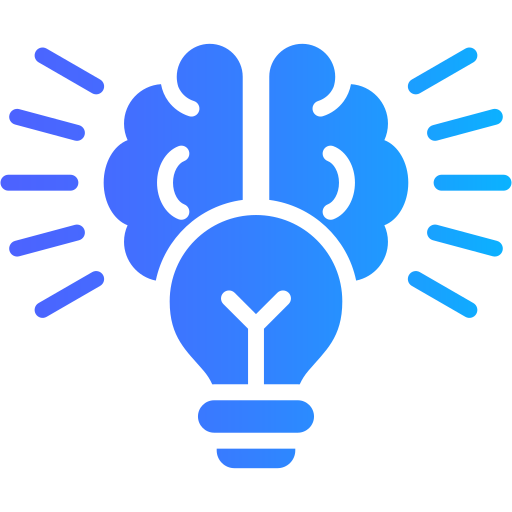
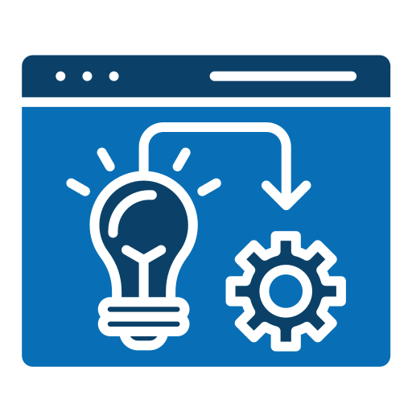

¿Que es?
El diseño centrado en el usuario (DCU) es una metodología que se enfoca en el usuario y sus necesidades durante todo el proceso de diseño. Esto significa que se tiene en cuenta la experiencia del usuario en cada paso del diseño, desde la conceptualización hasta la implementación.
La importancia del diseño centrado en el usuario radica en que puede mejorar la experiencia del mismo en nuestro sitio web, lo que a su vez puede aumentar el tiempo de permanencia en el sitio y reducir la tasa de rebote. Además, un diseño centrado en el usuario está estrechamente relacionado con la accesibilidad.
Etapas o Pasos
Para lograr desarrollar o diseñar una experiencia de usuario que satisfaga todas sus necesidades plenamente se deben seguir una serie de pasos:
 Paso 1: Análisis
Paso 1: Análisis
El proceso comienza con una fase de análisis que abarca al usuario, el contexto y los escenarios. El análisis del usuario permite conocer sus necesidades y características. El análisis del contexto se enfoca en aspectos externos como la competencia y el mercado.
 Paso 2: Conceptualización
El objetivo es alcanzar soluciones deseables, factibles y viables. Para ello, tras estudiar a los usuarios y determinar una gama de soluciones, se comienza a investigar cuáles son técnicamente factibles y cómo hacer que sean financieramente viables.
Paso 3: Prototipado
En la fase de prototipado, se crean versiones preliminares del diseño en baja y alta resolución para visualizar las funcionalidades del sitio. Este prototipo no está disponible en línea, pero permite realizar pruebas funcionales como botones, formularios o cajas de búsqueda en una plataforma sin elementos visuales completos
 Paso 4: Pruebas de Usuario
Paso 4: Pruebas de Usuario
La fase anterior se valida mediante pruebas de usuario. En esta etapa se realizan los test finales de la plataforma, incluyendo el uso de herramientas como el seguimiento ocular (eyetracking) para analizar la navegación visual de los usuarios.
 Paso 5: Implementación
Por último, después de corregir los problemas identificados, se procede con el desarrollo y la implementación del sitio web. Esta etapa culmina con la puesta en marcha del proyecto, preparando el lanzamiento del sitio en su versión final.
Beneficios
El diseño web enfocado en el usuario, como es de esperar, proporciona múltiples beneficios al mismo, pero también aplica lo mismo del lado de las empresas.
| Beneficios para el usuario |
|---|
| Mejorar la usabilidad. |
| Crear una experiencia positiva. |
| Aumentar la eficiencia. |
| Mejorar la accesibilidad. |
| Beneficios para las empresas |
|---|
| Reducir riesgos y costes. |
| Fidelizar a los usuarios. |
| Mejorar la imagen de la marca. |
| Aumentar la ventaja competitiva. |
Ejemplos de Casos Reales
Que mejor manera de comprender la importancia del diseño web centrado en el usuario que a través de ejemplos y casos de compañías que hicieron de esta un arma poderosa en el éxito de sí mismas.